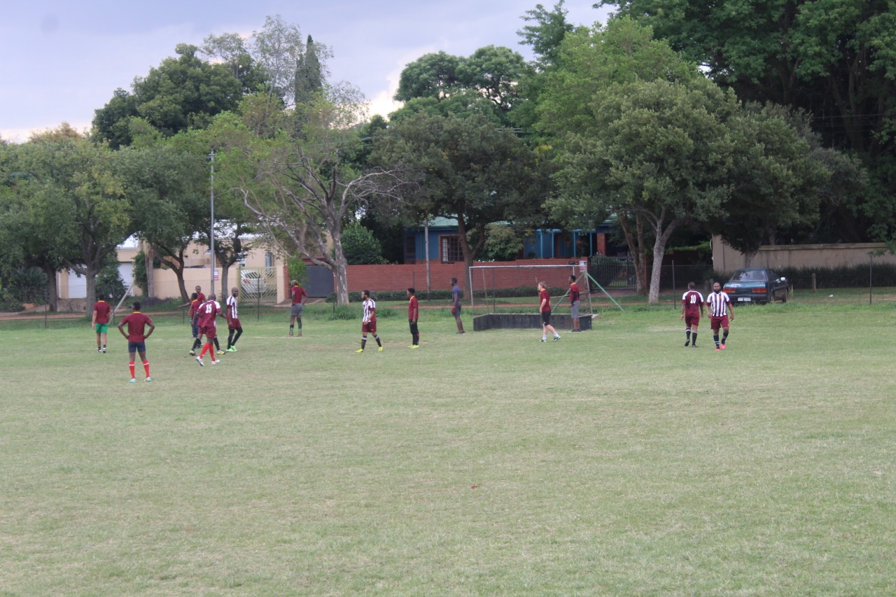
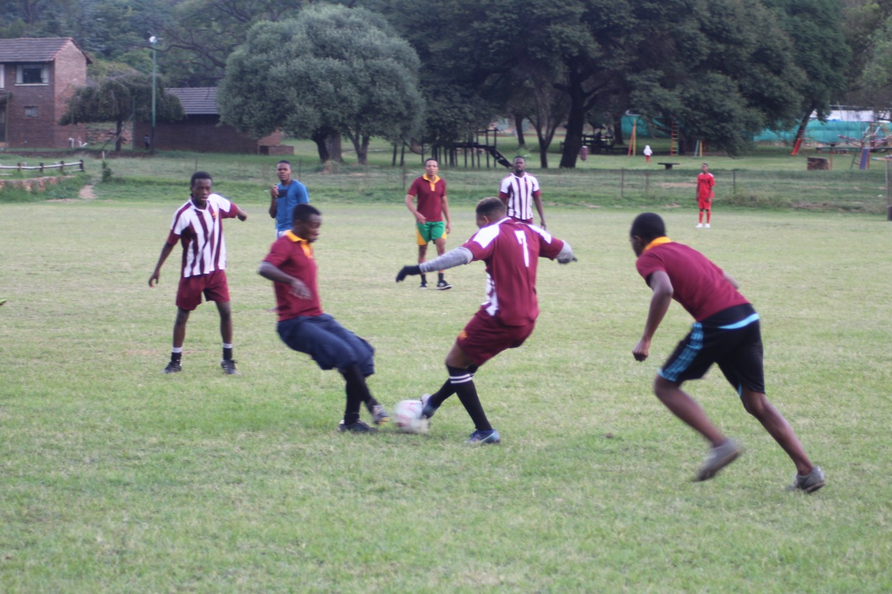
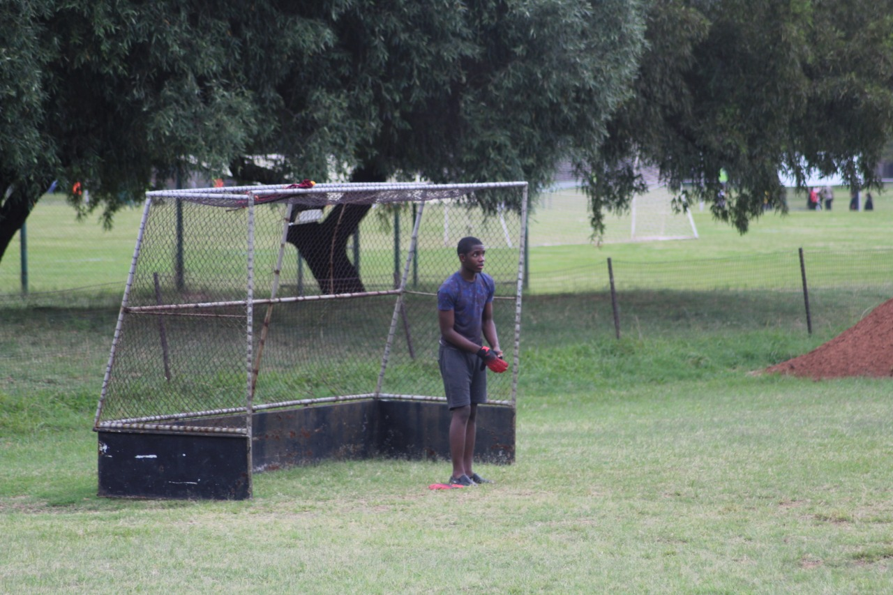
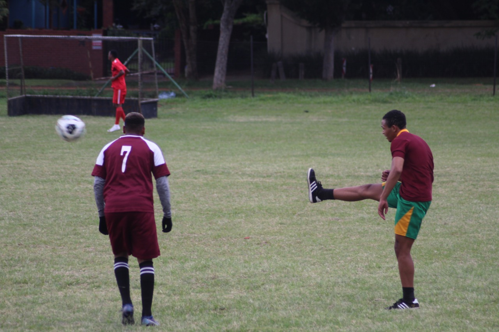
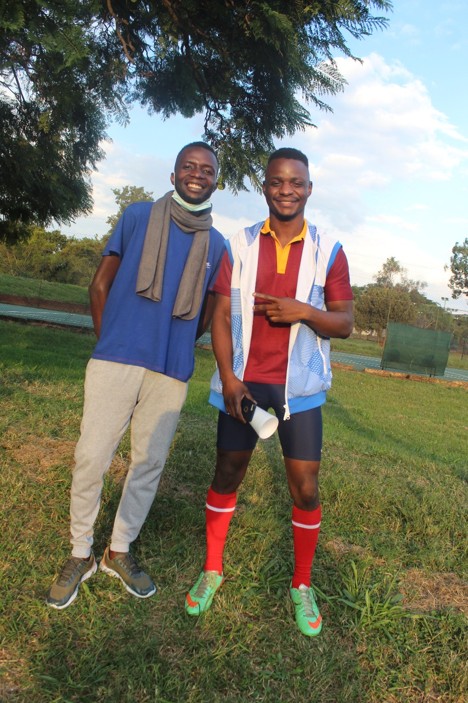
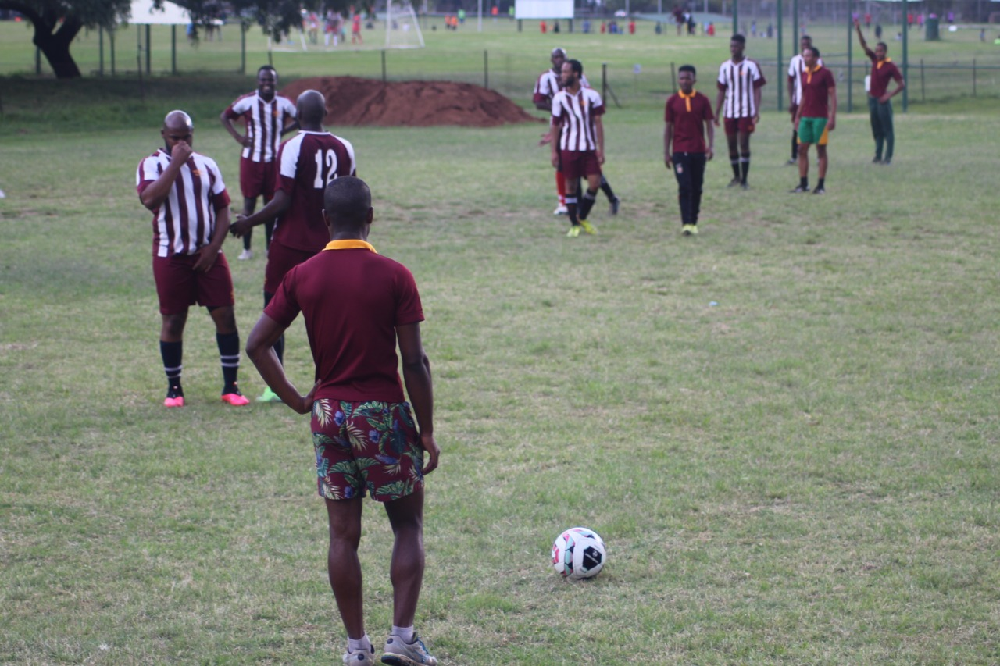
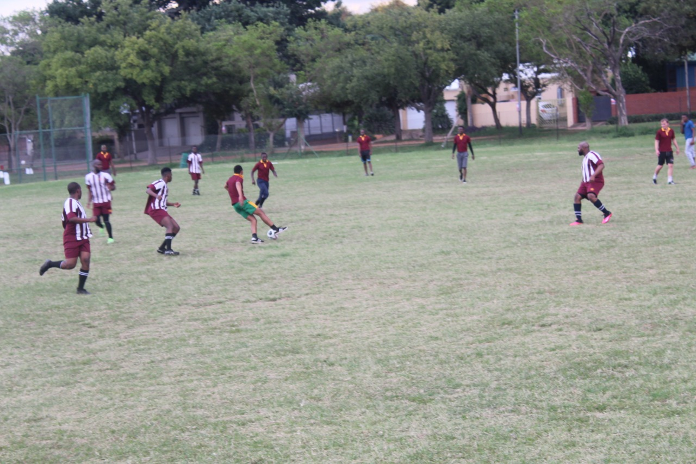
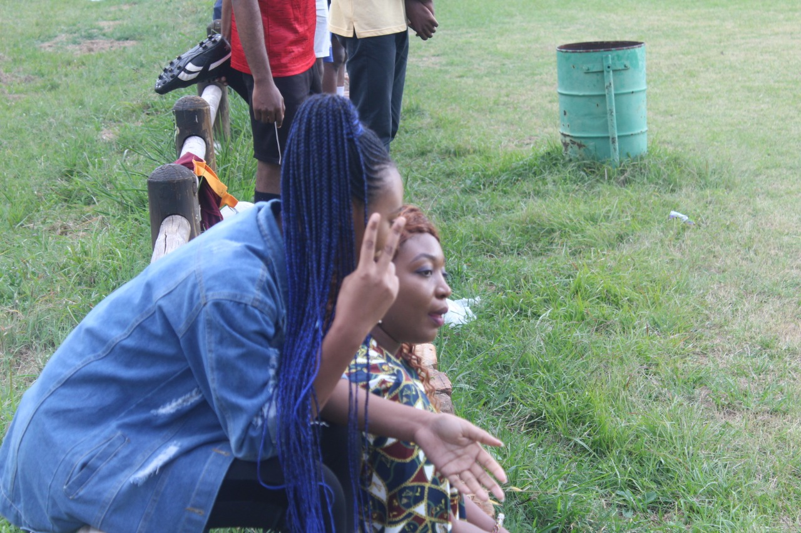
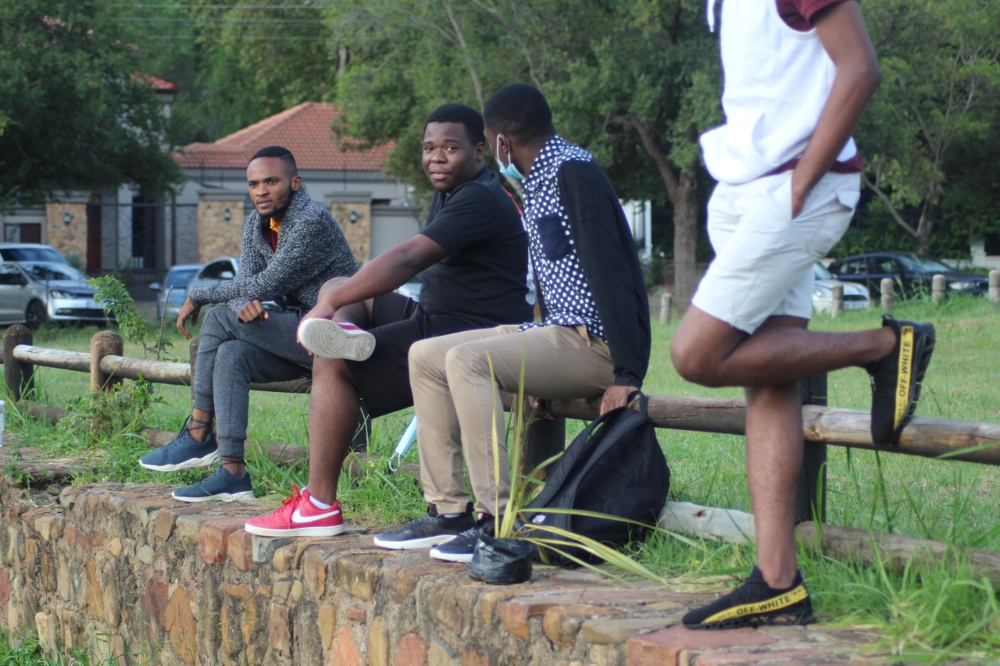

Une journée sombre pour la "New Covenant" FC
Bien que prêt et condifidant, le NC Fc
n'a pas pu s'imposer ce dimanche.
C'est ce dimanche 28 mars au «Riviera Park»
qu'un match fort s'est déroulé
dans la tension et le challenge.


Avec un score final de 2-0, le NC FC a perdu.
L'attaquant principal "Boyo" a déclaré
qu'il aurait pu faire mieux et
que son équipe avait de bons joueurs.
Et c'est sûr, NC FC se préparera pour
le retour en conséquence.


Du côté du capitaine Martin,
le milieu de terrain qui était
vide aurait été la faiblesse de l'équipe.
Le NC FC remercie ses supporters et
promet une victoire éclatante lors du prochain match.

